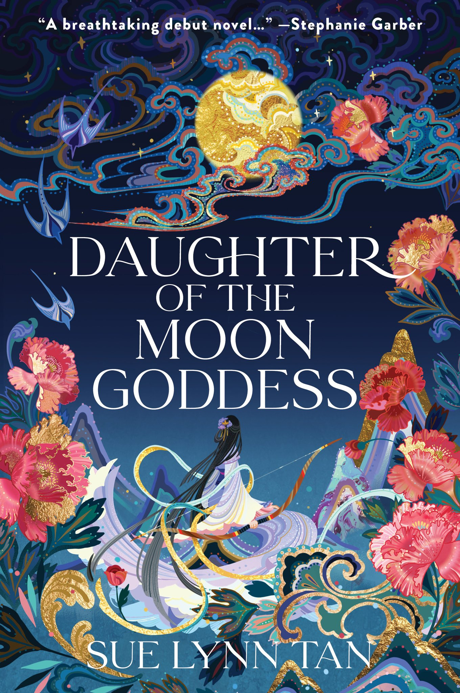

🔙 Back to All Books
- 
-
Daughter of the Moon Goddess
Sue Lynn Tan
Book Description
“Epic, romantic, and enthralling from start to finish.”—Stephanie Garber, #1 New York Times bestselling author of the Caraval series
Growing up on the moon, Xingyin is accustomed to solitude, unaware that she is being hidden from the feared Celestial Emperor who exiled her mother for stealing his elixir of immortality. But when Xingyin’s magic flares and her existence is discovered, she is forced to flee her home, leaving her mother behind.
Alone, powerless, and afraid, she makes her way to the Celestial Kingdom, a land of wonder and secrets. Disguising her identity, she seizes an opportunity to learn alongside the emperor’s son, mastering archery and magic, even as passion flames between her and the prince.
To save her mother, Xingyin embarks on a perilous quest, confronting legendary creatures and vicious enemies. But when treachery looms and forbidden magic threatens the kingdom, she must challenge the ruthless Celestial Emperor for her dream—striking a dangerous bargain in which she is torn between losing all she loves or plunging the realm into chaos.
Genres
Fantasy | Young Adult | Romance | Retellings | Fiction | Mythology
About the Author
Sue Lynn Tan is the author of Daughter of the Moon Goddess and Heart of the Sun Warrior. Her books will be translated into seventeen languages, and are USA Today and Sunday Times bestsellers.
Born in Malaysia, Sue Lynn studied in London and France, before moving to Hong Kong with her family. Her love for stories began with a gift from her father, her first compilation of fairytales from around the world. After devouring every fable she could find in the library, she discovered fantasy books, spending much of her childhood lost in magical worlds.